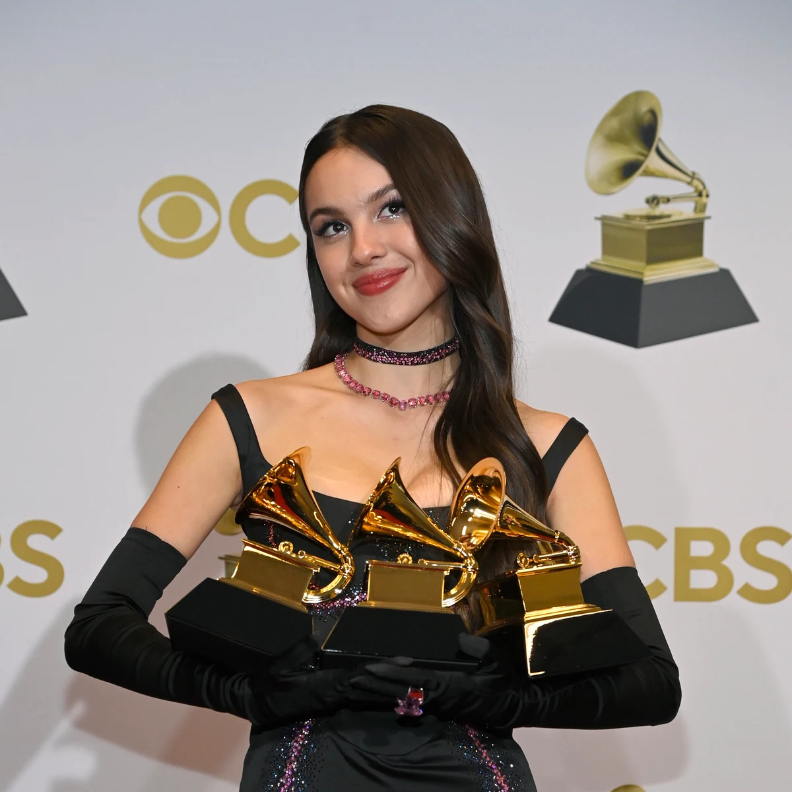

Su impacto en la música
Olivia Rodrigo tuvo un impacto importante en el pop de comienzos de la década de 2020. Su llegada coincidió con un período en el que sonidos relacionados con el pop-punk y el pop-rock comenzaron a tener nuevamente una presencia importante dentro de la música popular. Sus canciones ayudaron a acercar estos sonidos a una audiencia joven que también consumía pop contemporáneo. Sin embargo, su impacto no se debe solamente a su estilo musical. También está relacionado con su forma de escribir.
La importancia de sus letras
Una de las características más reconocibles de Olivia es que sus canciones suelen partir de situaciones concretas. En lugar de utilizar solamente frases generales sobre el amor o la tristeza, muchas veces describe pensamientos, conversaciones o situaciones específicas. Esto hace que sus canciones parezcan pequeñas historias. También utiliza contradicciones. Una persona puede estar triste y enojada al mismo tiempo; puede extrañar a alguien y saber que no debería volver con esa persona; puede sentirse feliz y, al mismo tiempo, insegura. Esa mezcla de emociones es una parte importante de su identidad como compositora.
La relación con sus seguidores
La conexión con sus fans es otro aspecto fundamental de su popularidad. Muchas personas encontraron en sus canciones una manera de expresar emociones que les resultaban difíciles de explicar. Además, las redes sociales ayudaron a que fragmentos de sus canciones se compartieran y llegaran rápidamente a nuevas audiencias. Sin embargo, su carrera consiguió ir más allá de las redes. Sus álbumes, premios y conciertos demostraron que podía mantener una audiencia estable.
Los premios Grammys
Olivia consiguió un reconocimiento muy importante de la industria musical. En 2022 recibió tres premios Grammy:
- Mejor Artista Nueva.
- Mejor Álbum Vocal Pop por SOUR
- Mejor Interpretación Pop Solista por “drivers license”.
También obtuvo varias nominaciones importantes en años posteriores. Estos premios fueron especialmente destacados porque llegaron muy temprano en su carrera.

Su presencia fuera de la música
Olivia también utiliza parte de su reconocimiento público para apoyar diferentes iniciativas sociales. Entre ellas se encuentra Fund 4 Good, una iniciativa vinculada con proyectos destinados a apoyar a mujeres y niñas. Esto representa una parte diferente de su imagen pública: no solamente la de cantante y actriz, sino también la de una persona con una plataforma que puede utilizar para llamar la atención sobre determinados temas.
Olivia Rodrigo en 2026
En 2026 comenzó una nueva etapa con you seem pretty sad for a girl so in love. El lanzamiento representa un nuevo capítulo después de los primeros años de su carrera. A diferencia de sus primeros proyectos, Olivia ya cuenta con varios años de experiencia como compositora, cantante y artista en vivo. Esto significa que puede experimentar con nuevas ideas y sonidos sin tener que comenzar desde cero. Su carrera continúa desarrollándose y todavía es difícil saber exactamente cómo será su siguiente etapa.
¿Por qué Olivia Rodrigo es importante?
Olivia Rodrigo logró algo que no resulta sencillo: construir una identidad artística reconocible en muy pocos años. Comenzó como actriz, pasó a escribir sus propias canciones y posteriormente consiguió reconocimiento internacional como cantante. Su música combina diferentes estilos y utiliza experiencias personales como inspiración. Sus canciones pueden ser tranquilas, intensas, divertidas, irónicas o melancólicas, dependiendo de la historia que quiera contar. Su trayectoria también muestra cómo un artista puede cambiar con el tiempo. SOUR representa una primera etapa, GUTS muestra una evolución y you seem pretty sad for a girl so in love abre un nuevo capítulo. Por eso, Olivia Rodrigo no es conocida únicamente por “drivers license” o por haber sido actriz de Disney. Construyó una carrera propia y una discografía que continúa creciendo.
¡Conocé más sobre Olivia Rodrigo!
Acá tenés un audio de una entrevista sobre Olivia Rodrigo y un video sobre su impacto en la música para que puedas aprender más sobre ella.
Entrevista sobre Olivia Rodrigo
Cosas que no sabías sobre ella
Conclusión
La carrera de Olivia Rodrigo es un ejemplo de una artista que consiguió transformar una primera oportunidad en una trayectoria internacional. Comenzó frente a las cámaras, descubrió progresivamente su pasión por la composición y finalmente encontró en la música el espacio para desarrollar su propia identidad. Su capacidad para combinar letras personales con diferentes estilos musicales le permitió conectar con una audiencia muy amplia. Desde el enorme impacto de “drivers license” hasta sus grandes giras y sus nuevos proyectos, Olivia continúa evolucionando como artista. Su historia todavía se está escribiendo y su nueva etapa en 2026 demuestra que todavía quedan muchos capítulos por conocer.